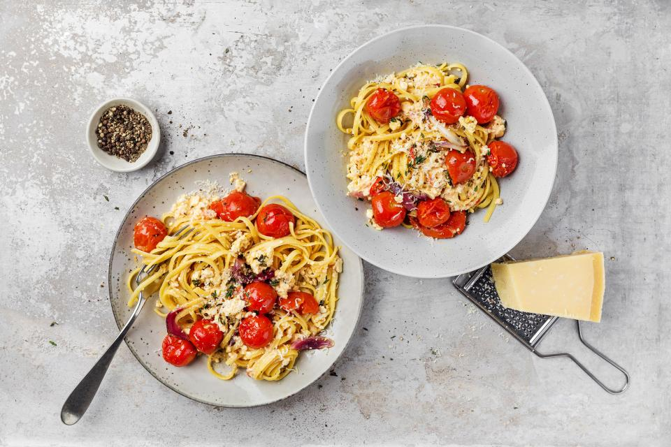

Baked feta pasta

Description
This simple pasta dish has been all over social media recently and it's
hardly surprising that this clever recipe has gone viral.
Baking the dish in the oven means that the tomatoes are particularly
aromatic and the feta is soft and creamy. With very little effort, the two
are combined to make a delicious sauce.
Ingredients (4 servings)
Tomatoes and feta
- 1 red onion
- 2 garlic cloves
- 800 g cherry tomatoes
- 1 dl olive oil
- 1 tsp sugar
- 250 g feta
- ½ red chilli pepper
- 5 sprig thyme
- 5 sprig oregano or basil
- ½ organic lemon
- ¼ tsp salt
- a little pepper
Pasta
- 500 g pasta
- 50 g parmesan
- 2 sprig thyme
- 2 sprig oregano
Utensils
One ovenproof dish (holding approx. 2 ½ l)
Steps
- Thinly slice the onions and garlic.
-
Mix the onions, garlic, cherry tomatoes, ⅔ of the oil and the sugar in
the dish.
-
Place the feta on top of the tomatoes, drizzle with the remainder of the
oil.
- Cut the chilli pepper into thin rings, roughly chop the herbs.
- Garnish with the chilli pepper, herbs and lemon zest, season.
-
Bake approx. 40 mins. in the centre of an oven preheated to 200°C.
Remove, crush the tomatoes and mix with the feta.
-
Cook the pasta in boiling salted water until just al dente. Set aside
approx. 50 ml of the cooking water, drain the pasta.
-
Add the pasta and reserved cooking water to the tomatoes and feta, mix
well
- Finely grate the parmesan, tear the herbs, scatter over the top.